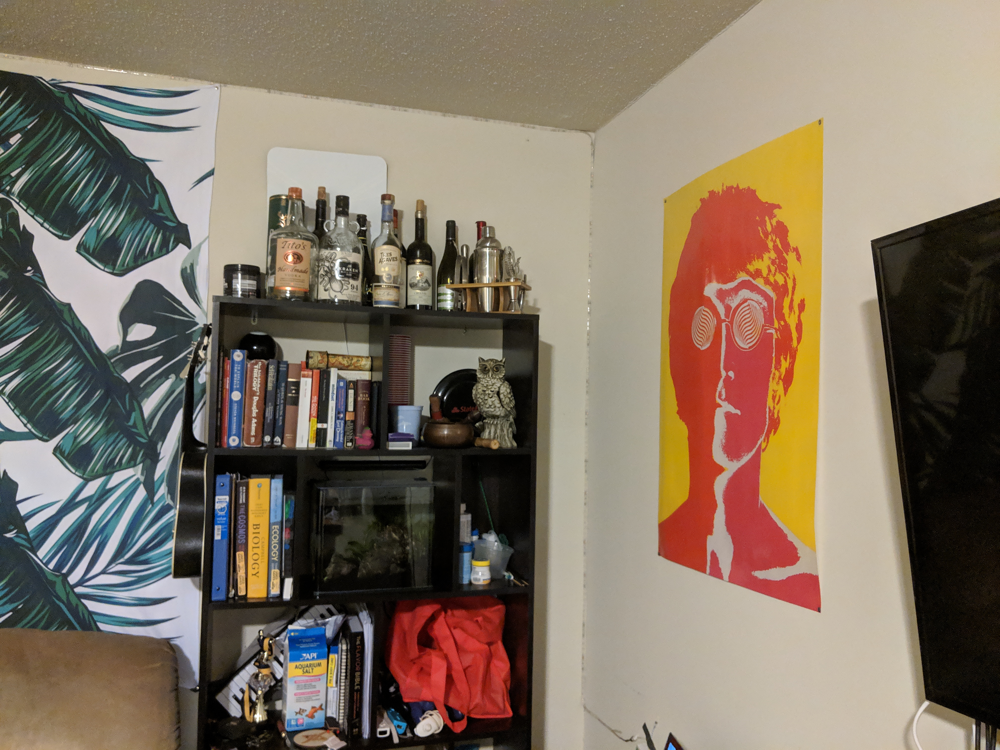
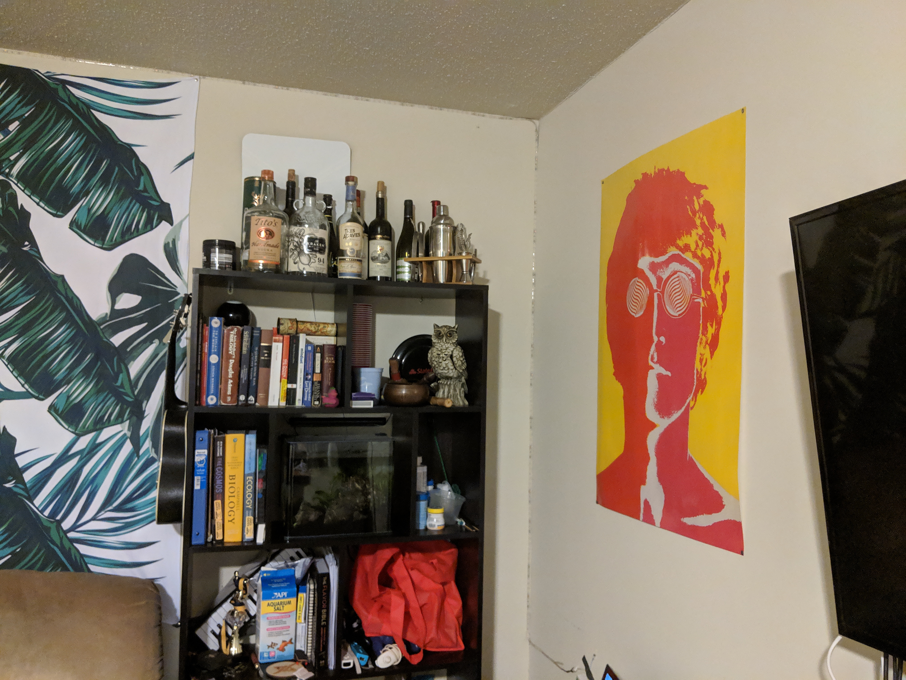
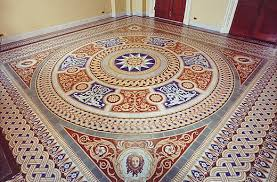
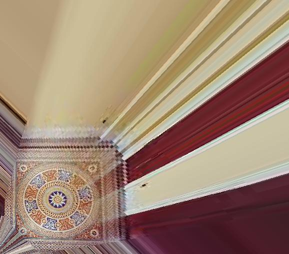
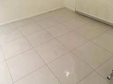
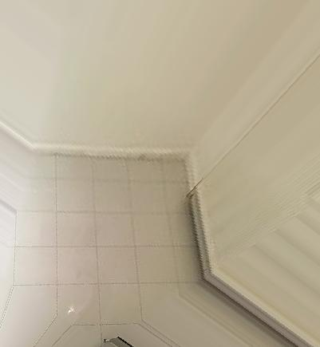
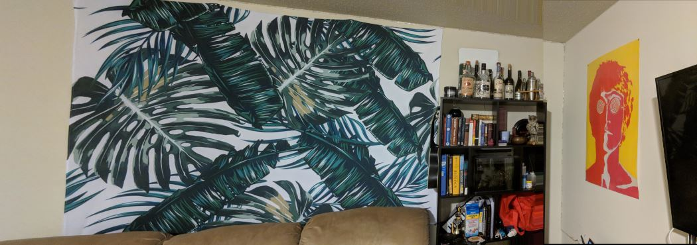

Project 6A: Image Warping and Mosaicing
Author:
Jesse Gao, cs194-26-afi
Project Overview
Creating image warps and mosaics.
Shoot the Pictures
Ideally the photos taken should be taken with the same camera with a stable axis of rotation. The following were pictures of my apartment room captured by my phone on a swivel stand.
 

Recover Homographies
In the next part of the project, we label the point correspondences in the images and compute the transformation.
Image Warping
Now that we have the homography, we can transform an image so that its corresponding points match some other set of corresponding points. I used numpy’s linear algebra functions to apply inverse transformations for the warped image pixels.
Floor art

Tiles[]

Mosaic
Using corresponding points, we can shift an image to “match” another and create a combination of both.
Original Images
Apartment Living Room

Hand Cropped Version 
Lessons Learned
In this project, I learned about the mathematics behind how to compute a homography, how to use that homography to warp an image. Overall it was a very challenging project because of all the small errors that could happen when computing the inverse transform from the original image’s pixels to the target image’s pixels.